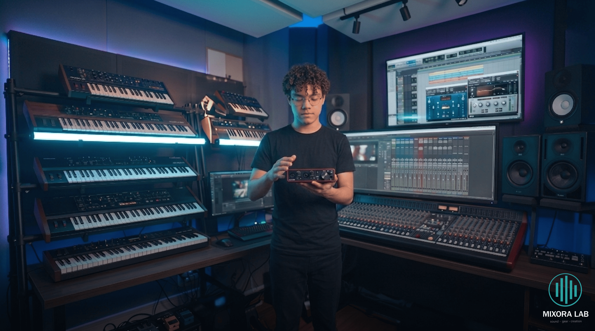

Melhores interfaces de áudio para produtores iniciantes (2026)
7 de maio de 2026

No mundo da gravação digital, a interface de áudio é a ponte essencial entre o seu talento e o computador. Para quem está começando, não se pensa duas vezes em ter o melhor equipamento que garanta som limpo e latência zero no orçamento.
1. Focusrite Scarlett 2i2

A interface de áudio mais icónica do mundo: pré-amplificadores de estúdio que elevam a qualidade da tua voz e instrumentos em segundos.
✓ Prós: Qualidade de áudio profissional e modo Air para brilho extra.
✗ Contras: Requer computador com porta USB-C para melhor desempenho.
Ver Preço na Amazon

2. PreSonus AudioBox GO
A interface ultraportátil para quem não pode perder a inspiração: leve, simples de usar e perfeita para gravar em qualquer lugar com qualidade.
✓ Prós: Extremamente compacta e já inclui software de gravação profissional.
✗ Contras: Possui menos entradas que modelos maiores de mesa.
Ver Preço na Amazon

3. Behringer UM2
A escolha definitiva para quem tem o orçamento apertado: oferece o essencial para gravar microfone e instrumento com simplicidade absoluta.
✓ Prós: O preço mais baixo do mercado e configuração plug-and-play.
✗ Contras: Construção em plástico e menor fidelidade sonora que as rivais.
Ver Preço na Amazon